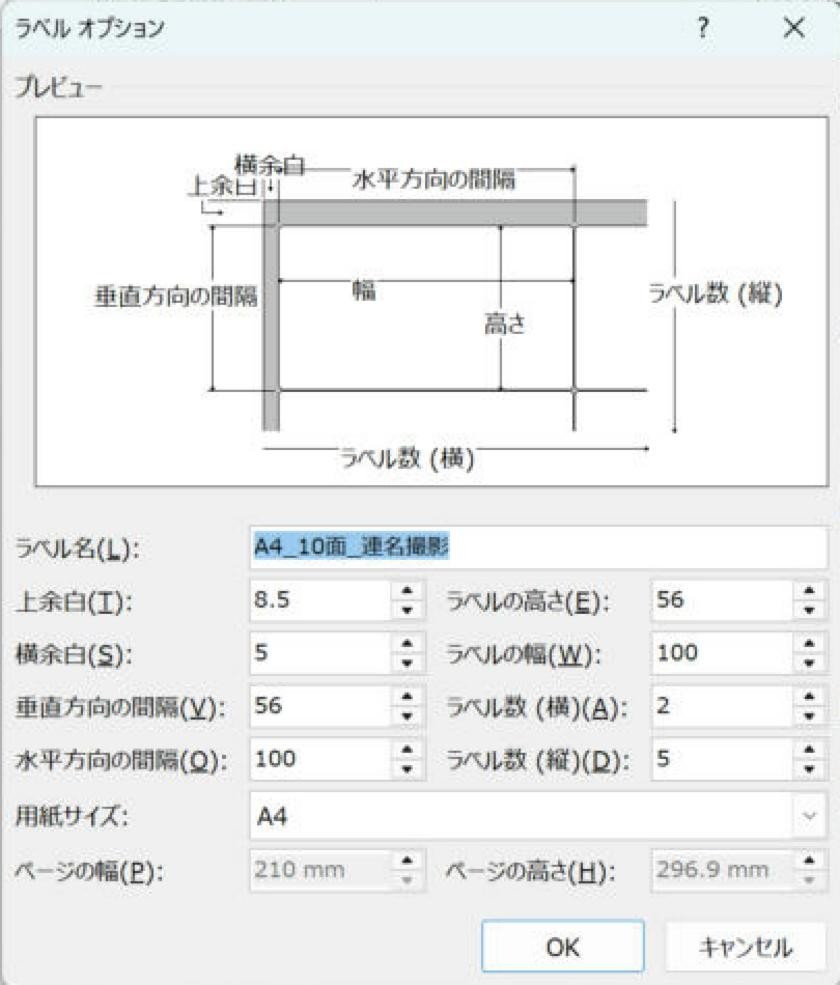
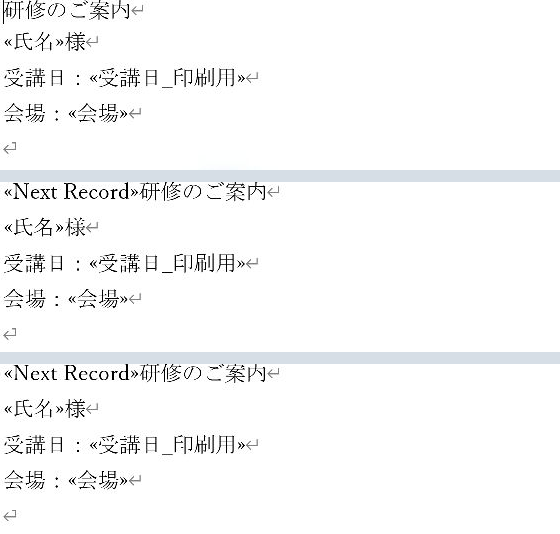
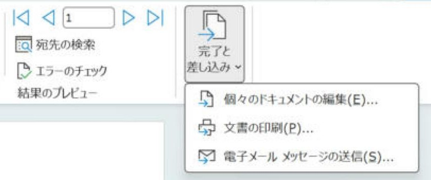

Word差し込み印刷で宛名ラベルを作る基本手順
用紙の品番を選び、1面目から全ラベルへ自動反映して印刷します。
やさしい（Lv.2）
- 用紙を選ぶ
- 1面目を作る
- 全ラベルに反映
- 完成・試し印刷
手順の目次を開く
完成までの流れ：1面目を作って、全員分のラベルにします
市販ラベルの品番を選び、Excel住所録から宛名を差し込みます。通常のラベル作成では、フィールドコードを編集する必要はありません。まずは2〜3件の架空の住所録で、別々の宛名が並ぶところまで試します。
ラベル用紙のメーカー・品番を手元に用意してください。画面上で同じ10面でも、余白やラベル寸法が違う製品があります。
準備：Excelは1行に1つの宛先を入れます
| 郵便番号_印刷用 | 住所1 | 住所2 | 氏名 |
|---|---|---|---|
| 100-0001 | 東京都千代田区千代田1-2-3 | サンプルビル101 | 山田 太郎 |
| 530-0001 | 大阪府大阪市北区梅田2-10-5 | 佐藤 次郎 |
1行目は見出しです。セル結合や途中の見出し・集計行は入れません。郵便番号を数値で受け取った場合は、郵便番号の印刷用列を作る手順で文字列を整えます。

手順1：「ラベル」を選び、用紙の品番を指定する
- Wordの空白の文書を開き、「差し込み文書」→「差し込み印刷の開始」→「ラベル」を選びます。
- 「ラベル オプション」で使用するプリンターの種類、ラベルの製造元、製品番号を選びます。
- 製品番号の用紙サイズと寸法が手元のラベル用紙に合うことを確かめ、「OK」を押します。
- 枠が見えない場合は表内をクリックし、「テーブル レイアウト」→「グリッド線の表示」をオンにします。グリッド線自体は印刷されません。

手順2：Excel住所録を接続する
- Excelの住所録を保存し、手順1でラベルの品番を設定したWord文書に戻ります。新しい文書は開かず、同じラベル文書で接続します。
- 「差し込み文書」→「宛先の選択」→「既存のリストを使用」を押し、保存したExcelファイルを選びます。
- 「テーブルの選択」で使うシート名を選びます。1行目が見出しなら「先頭行をタイトル行として使用する」をオンにして「OK」を押します。
- 「アドレス帳の編集」を開き、氏名・件数・空白の行がないことを確認して「OK」を押します。

手順3：左上の1面だけに宛名を作る
- 左上のラベル内をクリックします。
- 「〒」を入力し、「差し込みフィールドの挿入」で「郵便番号_印刷用」を選びます。
- Enterで改行し、「住所1」を挿入します。建物名を別行にするなら、さらにEnterを押して「住所2」を挿入します。
- 会社名が必要なら次の行へ挿入し、その下へ「氏名」を挿入して「 様」を普通の文字で入力します。
- 文字が入る範囲を見ながらフォントと行間を調整します。2面目以降はまだ編集しません。
〒«郵便番号_印刷用»
«住所1»
«住所2»
«氏名» 様「«氏名»」などの記号をキーボードで入力しても差し込みにはなりません。表示したい位置をクリックして「差し込みフィールドの挿入」から列名を選ぶ操作で入れます。Enterで次の行へ移り、次の列を挿入します。

手順4：「複数ラベルに反映」を押す
- 1面目の配置ができたら、「差し込み文書」→「複数ラベルに反映」を押します。版によっては「ラベルの更新」と案内されます。
- 全ラベルへ同じ配置が入り、2面目以降の先頭に「«Next Record»」が自動で入ることを確認します。
- 1面目を修正したときは、もう一度「複数ラベルに反映」を押します。他の面へ先に行った個別修正は上書きされるため、通常は1面目を直します。

手順5：プレビューしてから完成文書を出す
- 「結果のプレビュー」をオンにし、隣り合うラベルが別々の人になっているか見ます。
- 長い住所・会社名、建物名が空の人も確認します。
- ここで通常の「印刷」へ進まず、「完了と差し込み」から全員分を出力します。
- 「差し込み文書」→「完了と差し込み」→「個々のドキュメントの編集」を選びます。
- 「すべて」を選んで「OK」を押します。抽出している場合は、その時点の対象者全員が出力されます。
- 新しく開いた完成文書の先頭と最後を確認します。元のひな形とは別の文書です。
- 完成文書で「ファイル」→「印刷」を開き、用紙・向き・倍率・プリンターを確認して普通紙で試します。
- 位置と文字の欠けを確認してから本番用紙で印刷します。ひな形と完成文書は別の名前で保存します。

確認：普通紙とラベル用紙を重ねます
普通紙の試し印刷をラベル用紙に重ね、光に透かして上下左右を見ます。最上段だけでなく、最下段にもずれがないか確認します。倍率は原則100%（実際のサイズ）とし、プリンタードライバー側の用紙への自動拡大縮小にも注意します。
| 症状 | 最初に確認すること |
|---|---|
| すべて同じ宛名 | 1面目を作り直して「複数ラベルに反映」。修復手順へ。 |
| 下段ほどずれる | 製品番号、縦方向の間隔、用紙サイズ、印刷倍率。 |
| 最後のページに「様」だけ残る | 完成文書の対象者数と余り面を確認し、不要な固定文字を除いてから印刷。 |
| 文字が切れる | 最も長い宛名で枠の高さ・行間・文字サイズを調整。 |